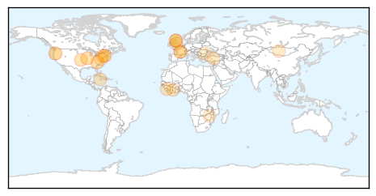
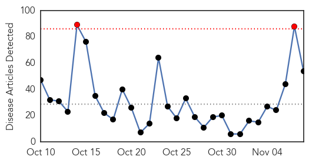
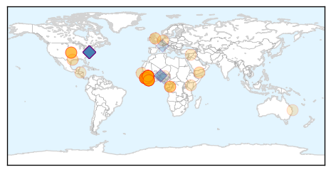
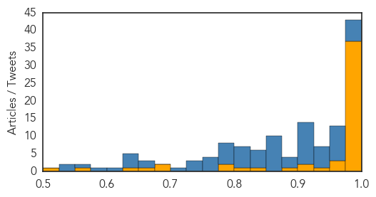

Unknown
30-Day Web Trend
0 alerts, 0 warnings

30-Day Twitter Trend
1 alerts, 0 warnings

Article Locations
Article Confidences

Top Articles:
- 0.936
- Apple Cider Linked To A Growing Foodborne Illness Outbreak, Health Officials Warn
- 0.886
- Cebu Lifestyle, The Freeman Sections, The Freeman
- 0.875
- Parents urged to make sure children are given flu vaccine
- 0.875
- Parents urged to make sure children are given flu vaccine
- 0.866
- US Republican candidate Carson pushes back on veracity questions
- 0.832
- Lehigh Valley Hospital drive-thru flu shots are back
- 0.769
- Oregon campaign addresses syphilis epidemic
- 0.762
- Piloto Alberto Ignacio Ardila Olivares leyó: JAMAICA: Regional health authorities defend Ferguson
- 0.730
- Putin to attend COP 21 climate summit in Paris
- 0.730
- 'Champion of democracy' Suu Kyi casts vote in landmark election
- 0.730
- Presidential campaign kicks off in coup-prone Burkina Faso
- 0.715
- Sierra Leone is Ebola-free, 18 months and 11,000 deaths after outbreak
- 0.707
- Burma votes in first open elections in 25 years
- 0.656
- L.Jambaljav: It’s meaningless to applaud false achievements in the medical sector
- 0.646
- Once more with 'the vision thing'
- 0.623
- Scarlet Fever is Making a Comeback with Antibiotic Resistance
- 0.608
- Lupus Research Findings Provide Evidence of Progress and Hope for Improved Quality of Life Among People With Lupus
- 0.581
- Thirteen injured in Colectiv fire die during the weekend, DNA makes arrests
- 0.578
- Awareness campaign destigmatises eczema
- 0.573
- E. Coli Outbreak Shows Vulnerabilities Of Big Chains Using Local Food
- 0.554
- CT not immune to big food poisoning cases
- 0.543
- Stay well this winter – make sure you are prepared and protected
- 0.538
- Irish Nurse Seeks Withdrawal of License for Gardasil
- 0.527
- Killer Care: How Medical Error Became America's Third Largest Cause of Death, And What Can Be Done About It
Top Tweets:
- 0.791
- Quisiera que me regalaran un ramo de flores,pero como sólo sirve pa' la foto,pienso en que vale mas otro regalo
- 0.685
- RT: El culpable de los homicidios. Maltrato en el hogar. Niñas embarazadas en los barrios es La Cerveza Polar de Lorenzo Mend…
- 0.631
- Y a pesar de la inflación, el Universo tiene de todo para todos,no se nos olvide
- 0.627
- RT: La comedia es un tema bastante serio e inteligente que necesita cualidades de convertir desgracias en humor para ident…
- 0.531
- RT: Otra corona mas , solo nos supera en coronas las funerarias de la cota 905 MissInternational2015
Ebola
30-Day Web Trend
2 alerts, 0 warnings

30-Day Twitter Trend
21 alerts, 0 warnings

Article Locations
Article Confidences
Top Articles:
- 1.000
- Sierra Leone declared free of Ebola, setting off celebration
- 1.000
- Sierra Leone declared free of Ebola transmissions
- 1.000
- Sierra Leone Declared Free of Ebola Transmissions
- 1.000
- World Health Organization Declares Sierra Leone Free of Ebola Virus Transmission
- 1.000
- Sierra Leone is Finally Marked Ebola Free
- 1.000
- Sierra Leone has successfully beaten Ebola, WHO says
- 1.000
- Sierra Leone Declared Free of Ebola Transmissions
- 1.000
- Sierra Leone free from Ebola transmissions on Saturday
- 1.000
- William P.J. Lynch Jr.comWilliam P.J. Lynch Jr.com
- 1.000
- Sierra Leone's Ebola Outbreak Is Over, WHO Says
- 1.000
- Ebola “Day-Zero” in Sierra Leone - Sierra Leone
- 1.000
- Dont worry , be horny!
- 1.000
- Sierra Leone Current Affairs
- 1.000
- Sierra Leone Is Now Declared Ebola-Free Officially
- 1.000
- Sierra Leone Declared Ebola-Free
- 0.999
- Ebola still smolders in rural Guinea
- 0.999
- WHO Officially Declares Sierra Leone Ebola
- 0.998
- Sierra Leone celebrates end of Ebola epidemic
- 0.998
- Sierra Leone Celebrates End Of Ebola Epidemic
- 0.998
- World Health Organization: Sierra Leone Is Ebola-free
- 0.997
- Sierra Leone Ebola free
- 0.997
- WHO declares Sierra Leone Ebola-free
- 0.996
- Sierra Leone rejoices end of Ebola epidemic
- 0.996
- Sierra Leone celebrates end of Ebola epidemic
- 0.994
- The decades-old treatment that may save a young Dallas nurse infected with Ebola
- 0.993
- Sierra Leone celebrates end of Ebola epidemic
- 0.993
- Sierra Leone Declared Ebola-Free
- 0.992
- WHO Declares the End of Ebola Epidemic in Sierra Leone
- 0.992
- Sierra Leone Declared Ebola-Free
- 0.988
- West African governments must integrate trained Ebola responders into community-based health systems - Sierra Leone
- 0.985
- Street celebrations as Sierra Leone declared Ebola-free
- 0.985
- Sierra Leone Is Free From Ebola, Women Still In Danger
- 0.984
- Sierra Leone president lashes out as country declared Ebola-free
- 0.982
- WHO: Sierra Leone declared free of Ebola
- 0.980
- WHO declares Sierra Leone Ebola free
- 0.980
- Street celebrations as Sierra Leone declared Ebola-free
- 0.978
- Sierra Leone Declared Ebola-Free
- 0.974
- Sierra Leone: West African governments must integrate trained Ebola responders into community-based health systems
- 0.969
- Street celebrations as Sierra Leone declared Ebola-free
- 0.956
- Connecticut Teen Develops Ground Breaking Test For Ebola
- 0.931
- Street celebrations as Sierra Leone declared Ebola-free
- 0.910
- Ebola-free mark met by cheers, caution
- 0.907
- The World Today: Activists say Islamic State releases 37 Syrian Christians
- 0.883
- Ebola Is Still Affecting the Women and Girls of Sierra Leone
- 0.826
- Germany: Migration Crisis Becomes Public Health Crisis by Soeren Kern
- 0.820
- Migration Crisis Becomes Public Health Crisis
- 0.794
- Sierra Leone Is Ebola-Free, but Pregnant Girls Still Suffer the Aftermath
- 0.794
- Germany: Migration Crisis Becomes Public Health Crisis
- 0.691
- A Part Of Sierra Leone's Future
- 0.686
- 110815-nvr-wir-worldbriefs
Showing top 50 articles...
Top Tweets:
- 1.000
- World Health Organization commends Sierra Leone for stopping Ebola virus transmission - https://t.co/8T1sTwRUOu ebola
- 0.999
- Ebola outbreak - https://t.co/UpMwDZivJL ebola
- 0.998
- World Health Organization: Sierra Leone Is Ebola-free - https://t.co/KfXcBeUeYW ebola
- 0.997
- World Health Organization declares Sierra Leone free of Ebola transmissions - https://t.co/xh3BPxuiz4 ebola
- 0.997
- Ebola: World Health Organization says virus transmission in Sierra Leone has ended - https://t.co/khDhJ8MixU ebola
- 0.997
- Ebola outbreak: Sierra Leone to be declared disease - https://t.co/fIboOZ0g5N ebola
- 0.996
- Sierra Leone celebrates end of Ebola outbreak - https://t.co/nU3js8ta0C ebola
- 0.996
- Sierra Leone celebrates end of Ebola outbreak - https://t.co/0Ak0sSvpsF ebola
- 0.996
- Ebola epidemic ends in Sierra Leone - https://t.co/YAIn19j8TF ebola
- 0.996
- Celebrations as Sierra Leone's Ebola outbreak declared over - https://t.co/JSdhAKAeBq ebola
- 0.996
- Britain hails end of Ebola outbreak in Sierra Leone - https://t.co/FVTk48xUGn ebola
- 0.995
- What the ebola virus taught us - https://t.co/349fUKBSTs ebola
- 0.993
- Sierra Leone Celebrates The End Of The Ebola Outbreak - https://t.co/08ZPmxl0FR ebola
- 0.992
- Sierra Leone ebola free - https://t.co/GzIJUslowI ebola
- 0.992
- Sierra Leone celebrates end of Ebola epidemic - Eyewitness News https://t.co/7TINpGNxr4 ebola EVD
- 0.992
- Sierra Leone Ebola Free - https://t.co/hAkSbtsWNw ebola
- 0.988
- WHO declares Sierra Leone Ebola free - https://t.co/S2cYiWf2E1 ebola
- 0.988
- Sierra Leone declared free of Ebola virus - https://t.co/2pCpb8Kjgn ebola
- 0.988
- Limerickman proposes and marries in Sierra Leone despite Ebola fears - https://t.co/2QRPcziivg ebola
- 0.987
- Sierra Leone Free Of Ebola - https://t.co/mGEqWWyWeI ebola
- 0.987
- Ebola: 'We Are Free' - https://t.co/gUnpLuliZ4 ebola
- 0.987
- EBOLA United States Ebola baby born at US hospital https://t.co/Z9rxM2wNQI EbolaFree ebolafreesierraleone Ebola
- 0.986
- Sierra Leone is officially Ebola-free - https://t.co/ajn3XXyjzD ebola
- 0.986
- Sierra Leone is officially 'Ebola-free' - https://t.co/QIPRkgKsjB ebola
- 0.984
- UNICEF welcomes end of Ebola outbreak in Sierra Leone, calls for more support to 11500+ ... - https://t.co/3ZkW4d8v7G ebola
- 0.982
- WHO officially declares Sierra Leone Ebola-free - https://t.co/z1wM5RxiEt ebola
- 0.982
- WHO declares Sierra Leone free of Ebola - https://t.co/jgXTKg1Jev ebola
- 0.982
- WHO declares Sierra Leone 'free of Ebola' - https://t.co/VNOhWNCVtE ebola
- 0.982
- RT: L’OMS déclare la Sierra Leone exempte de la transmission du virus de l’Ebola https://t.co/zobnIlKj2d
- 0.979
- The people of Sierra Leone say bye bye Ebola - https://t.co/sXtoNWZ8hF ebola
- 0.977
- Sierra Leone declared free of Ebola epidemic - https://t.co/9Pi8Dfij0y ebola
- 0.977
- Guinea traditional healers sensitized on ebola - https://t.co/RxIMTsveSW ebola
- 0.974
- Alie Kabba Speaks about Sierra Leone's Ebola free status - https://t.co/LjhM2hKU9k ebola
- 0.972
- AFRICA: Sierra Leone declared free of Ebola - https://t.co/XiEGkJEuAw ebola
- 0.970
- Sierra Leoneans mark Ebola-free status, but outbreak's effects persist - https://t.co/KKSnZF1ZIl ebola
- 0.969
- Sierra Leone celebrates as WHO declares country free of Ebola - https://t.co/JKSbHfjZvp ebola
- 0.966
- WHO: Sierra Leone declared free of Ebola - https://t.co/bafORxvaKu ebola
- 0.965
- Siera leone Ebola free, WHO now says - https://t.co/A2wZwu4Mzc ebola
- 0.964
- Sierra Leone declared Ebola free - https://t.co/12zjmWUkvg ebola
- 0.964
- Sierra Leone declared Ebola free - https://t.co/0duSkVkKaA ebola
- 0.964
- Sierra Leone Declared Ebola Free - https://t.co/5WVyDf9BiK ebola
- 0.958
- Sierra Leone declared free of Ebola - https://t.co/VFpLlee1dh ebola
- 0.957
- Road to Ebola 1 - https://t.co/ZyDdB167hd ebola
- 0.955
- How The Ebola Scare Stigmatized African Immigrants In The U.S. - Science 2.0 https://t.co/CFViGexiQ7 ebola EVD
- 0.953
- Sierra Leone declared Ebola-free - The Week Magazine https://t.co/DZqszdLxuU ebola EVD
- 0.953
- Sierra Leone Is Now Declared Ebola-Free Officially - https://t.co/t3ExU6o2aD ebola
- 0.953
- BREAKING!!!!! EBOLA survivor gives birth to baby in United States!!!!!! EBOLA LIVES SEMEN 9 MONTHS https://t.co/Z9rxM2wNQI ebola EbolaFree
- 0.951
- Data For Ebola Recovery Website - https://t.co/0WkXeuyhJQ ebola
- 0.950
- I Lost Three Sisters To Ebola - https://t.co/48wYwvxfRj ebola
- 0.948
- Sierra Leone declared Ebola free as Guinea struggles - https://t.co/Csr7gGjBdl ebola
Showing top 50 tweets...